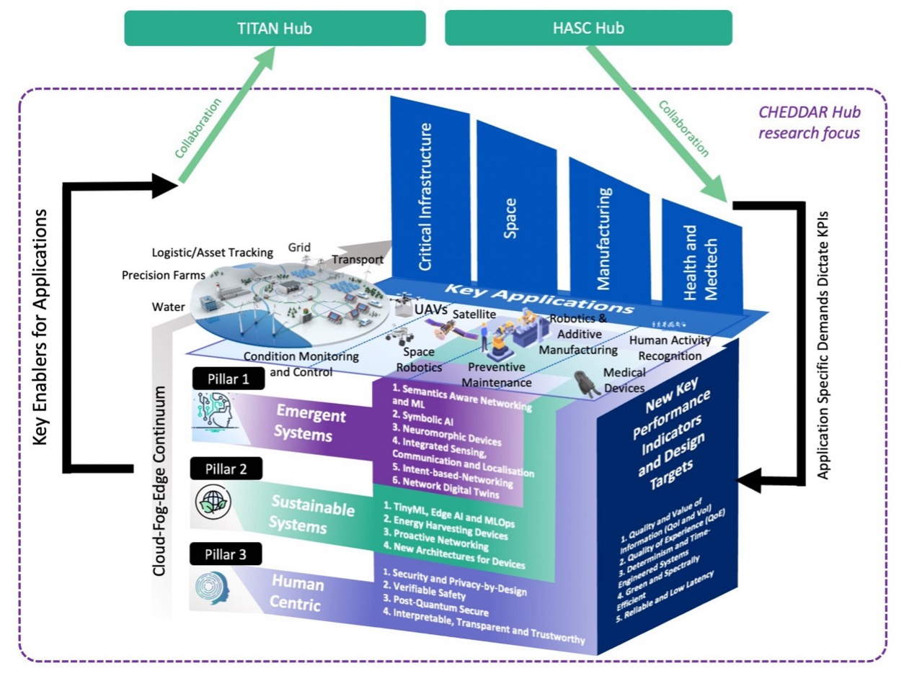

Welcome to the ORAN-TWIN and ORAN-TWIN-X projects
ORAN-TWIN and ORAN-TWIN-X are funded by EPSRC Hub TMF uplift, Federated Telecoms Hub 6G Research Partnership Funds (THRPF). The task for ORAN-TWIN project is to integrate advanced machine learning techniques into ORAN xApps for dynamic resource allocation and test time data augmentation. The ORAN-TWIN-X project then envisions an explainable, energy-efficient control framework for O-RAN built within a digital twin environment through real-time decision explanation and live interaction with AI agent for result interpretation.
We plan to simulate diverse network conditions to generate synthetic data, optimize resource allocation and ensure real-time performance adaptation. Leveraging digital twin, the xApps can be interacting with virtual environments to avoid hardware cost and search overhead in the physical systems. Digital twin helps to detect and diagnose potential issues, thereby improving physical systems reliability and efficiency. Next, we develop a novel explainability-enhanced pipeline that distils DRL-based xApp policies into human-interpretable surrogate models—specifically, decision trees. During training, state-action-reward trajectories are collected from the digital twin, and a decision tree is fitted to approximate the learned policy. The resulting surrogate model provides a set of rule-based control decisions that mirror the behavior of the original policy while offering full transparency into when and why energy-saving actions are taken.
Highlights: Check out ORAN-TWIN Demo on Energy-Saving AI-RSG!
Special Announcement: TBC
About CHEEDAR
: Communications Hub For Empowering Distributed ClouD Computing Applications And Research is a new hub dedicated to advancing future communications, funded by the Engineering and Physical Sciences Research Council (EPSRC) – UK Research and Innovation (UKRI) and Department for Science, Innovation and Technology (DSIT).

In the context of CHEDDAR Hub research focus, the first pillar is to investigate and design emergent systems, which enable emergence, encompassing network embedded sensing & intelligence, and the support of emerging methods of computation from autonomy to quantum.
More information about CHEDDAR, please visit: https://cheddarhub.org/
About THRPF
With reference to the award to support the ORAN-TWIN project, "CHEDDAR: Communications Hub For Empowering Distributed ClouD Computing Applications And Research" and uplift thereof named CHEDDAR - TMF uplift, were awarded by Engineering and Physical Sciences Research Council (EPSRC) on February 2023 and January 2024 respectively.
With TMF uplift, CHEDDAR has been allocated a £1.33m (at 80% fEC) through Federated Telecoms Hub 6G Research Partnership Funds (THRPF), to build joint work between members of the Hub and new partners across the UK landscape to expand the research programme in alignment with the hub's objectives and to showcase first 6G trials and experiments.
More information about THRPF, please visit: https://www.federated-telecoms-hubs.org